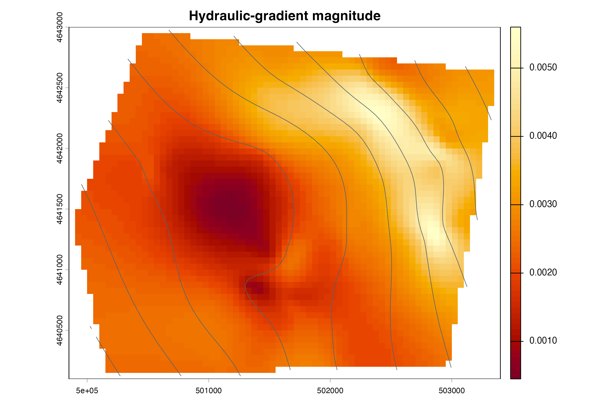
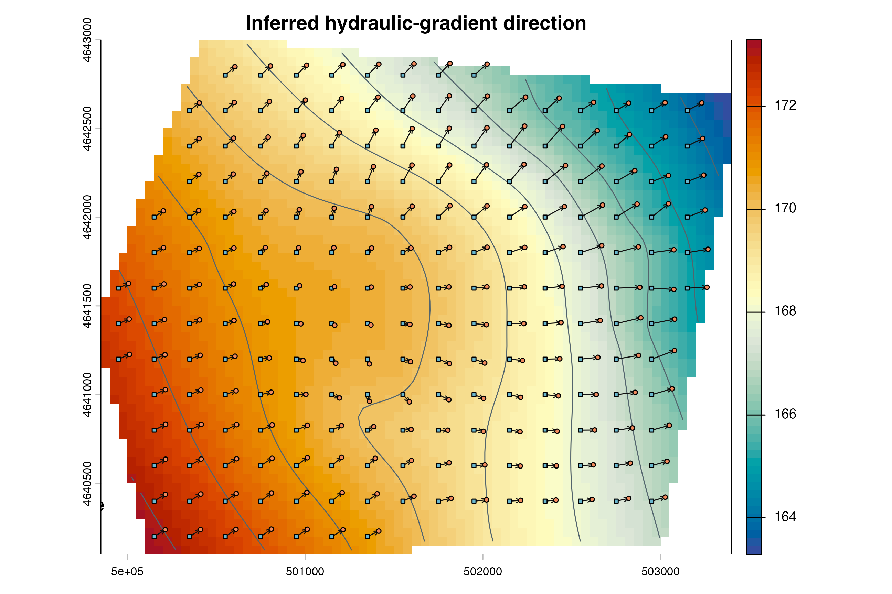
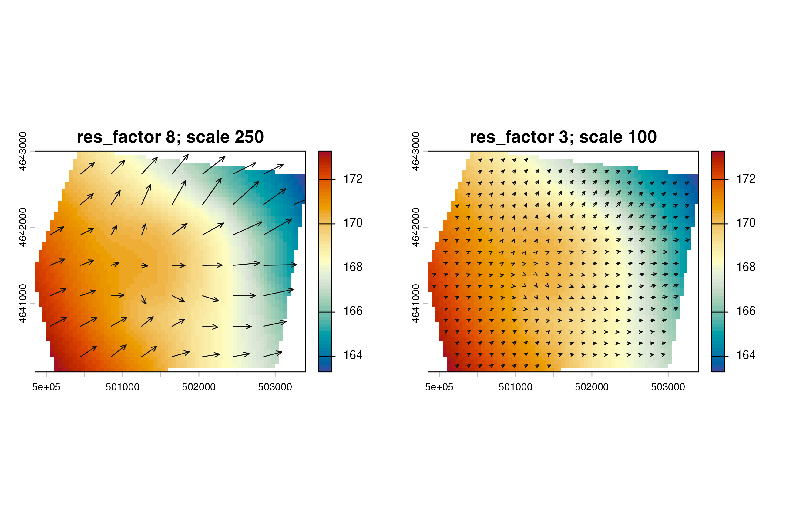

Hydraulic-gradient arrows
flow-arrows.Rmdps_flow_arrows() derives slope, aspect, gradient
magnitude, sampled points, and line features from the interpolated
raster. Aspect supplies the direction toward decreasing modeled
head.
flow <- ps_flow_arrows(
surface,
res_factor = 4,
scale = 150,
min_gradient = 1e-5
)
bases <- ps_arrow_vertices(flow$arrows, "first")
tips <- ps_arrow_vertices(flow$arrows, "last")
data.frame(
product = c("gradient raster", "sample points", "arrow lines", "arrow bases", "arrow tips"),
layers_or_features = c(nlyr(flow$raster), nrow(flow$points), nrow(flow$arrows), nrow(bases), nrow(tips))
)
#> product layers_or_features
#> 1 gradient raster 3
#> 2 sample points 201
#> 3 arrow lines 201
#> 4 arrow bases 201
#> 5 arrow tips 201
plot(flow$raster[["igrad"]], col = hcl.colors(64, "YlOrRd"),
main = "Hydraulic-gradient magnitude")
plot(contours, add = TRUE, col = "#52646d", lwd = .8)
plot(surface, col = cols, main = "Inferred hydraulic-gradient direction")
plot(contours, add = TRUE, col = "#52646d")
draw_lines(flow$arrows)
plot(bases, add = TRUE, pch = 22, bg = "#6ab7cf", cex = .6)
plot(tips, add = TRUE, pch = 21, bg = "#f08a5d", cex = .6)
legend("bottomleft", c("base", "tip"), pch = c(22, 21),
pt.bg = c("#6ab7cf", "#f08a5d"), bty = "n")
Verify that sampled tips are downgradient
The check samples the modeled head at every base and tip. Tips outside the masked raster are reported and excluded. A 0.01-head-unit tolerance addresses raster sampling and the released synthetic data precision; it does not excuse a systematic uphill direction.
base_head <- extract(surface, bases)[, 2]
tip_head <- extract(surface, tips)[, 2]
direction_check <- data.frame(
arrow_id = seq_len(nrow(flow$arrows)),
base_head = base_head,
tip_head = tip_head,
head_difference = tip_head - base_head
)
tolerance <- 0.01
direction_check$pass <- with(
direction_check,
is.finite(base_head) & is.finite(tip_head) & tip_head <= base_head + tolerance
)
sampled <- is.finite(direction_check$base_head) & is.finite(direction_check$tip_head)
pass_rate <- mean(direction_check$pass[sampled])
stopifnot(pass_rate >= 0.95)
head(direction_check, 10)
#> arrow_id base_head tip_head head_difference pass
#> 1 1 169.5021 169.3314 -0.1706134 TRUE
#> 2 2 169.1395 168.8729 -0.2666140 TRUE
#> 3 3 168.7623 168.4748 -0.2874948 TRUE
#> 4 4 168.3546 168.0538 -0.3007199 TRUE
#> 5 5 167.9280 167.6249 -0.3031730 TRUE
#> 6 6 167.5080 167.2057 -0.3023194 TRUE
#> 7 7 167.0963 NA NA FALSE
#> 8 8 166.6503 NA NA FALSE
#> 9 9 170.1602 169.9982 -0.1620020 TRUE
#> 10 10 169.8112 169.6491 -0.1620899 TRUE
data.frame(
arrows = nrow(direction_check),
sampled_at_base_and_tip = sum(sampled),
tips_outside_surface = sum(!sampled),
passes_within_tolerance = sum(direction_check$pass[sampled]),
pass_rate_percent = round(100 * pass_rate, 1),
tolerance_head_units = tolerance
)
#> arrows sampled_at_base_and_tip tips_outside_surface passes_within_tolerance
#> 1 201 198 3 198
#> pass_rate_percent tolerance_head_units
#> 1 100 0.01Density, scale, filtering, and log options
sparse <- ps_flow_arrows(surface, res_factor = 8, scale = 250, min_gradient = 1e-5)
dense <- ps_flow_arrows(surface, res_factor = 3, scale = 100, min_gradient = 1e-5)
filtered <- ps_flow_arrows(surface, res_factor = 4, scale = 150, min_gradient = 0.002)
logged <- ps_flow_arrows(surface, res_factor = 4, scale = 250,
min_gradient = 1e-5, log_gradient = TRUE, log_arrow = TRUE)
data.frame(
setting = c("sparse", "dense", "minimum gradient 0.002", "log gradient and length"),
lines = c(nrow(sparse$arrows), nrow(dense$arrows), nrow(filtered$arrows), nrow(logged$arrows))
)
#> setting lines
#> 1 sparse 54
#> 2 dense 359
#> 3 minimum gradient 0.002 157
#> 4 log gradient and length 201
par(mfrow = c(1, 2), mar = c(3, 3, 3, 1))
plot(surface, col = cols, main = "res_factor 8; scale 250")
draw_lines(sparse$arrows, length = .065)
plot(surface, col = cols, main = "res_factor 3; scale 100")
draw_lines(dense$arrows, length = .04)
res_factor controls sampling density, not monitoring
density. scale and log_arrow affect
cartographic length. min_gradient can remove flat or nearly
flat areas. Log transformation changes the displayed or stored
magnitude; it does not convert gradient into velocity.
Arrows represent inferred hydraulic-gradient direction from the interpolated surface. Arrow length may be cartographically scaled. They are not groundwater velocities, travel times, particle paths, or contaminant-transport trajectories, and the package is not a process-based groundwater-flow model.